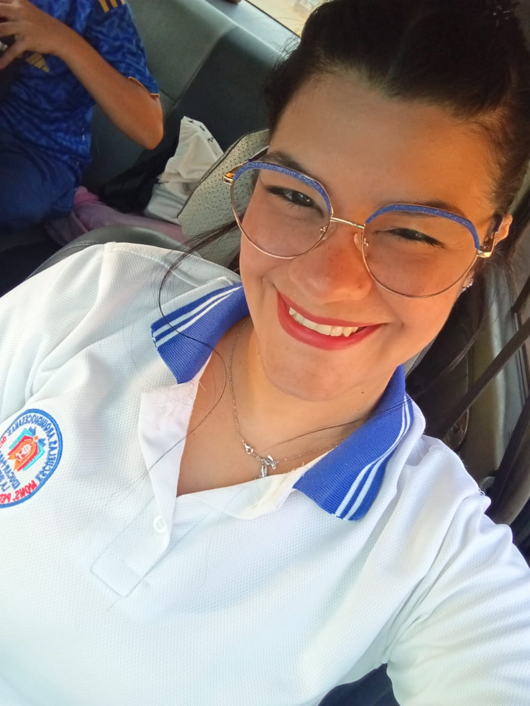
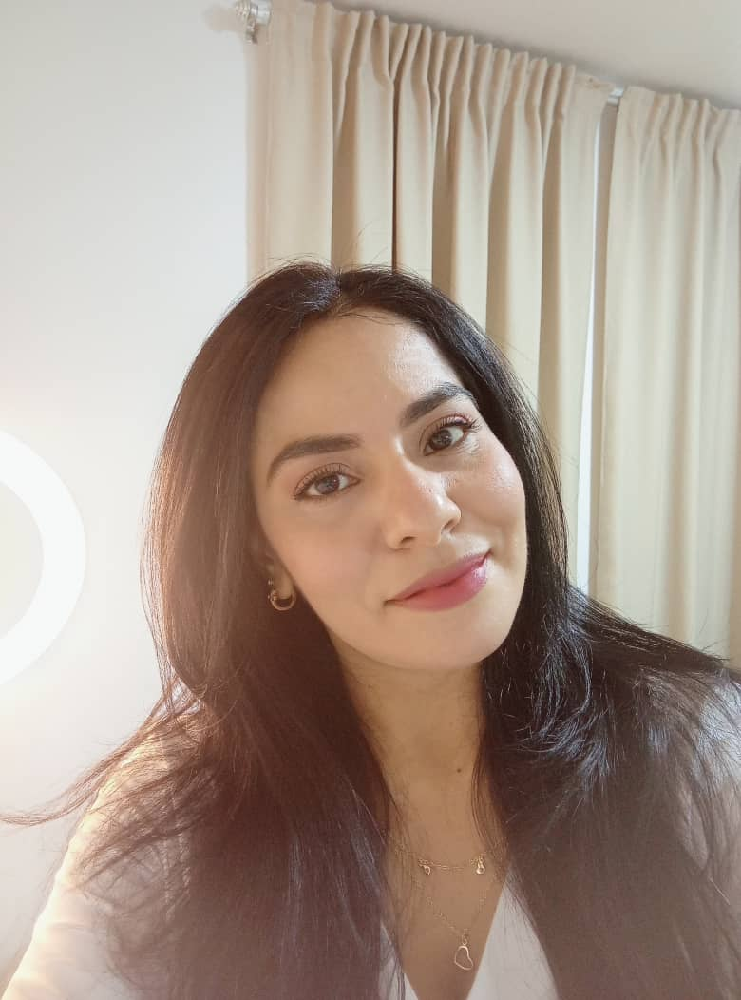

Conoce a las Autoras

Sorgalim Barreno
Futura Licenciada en Educación PrimariaActualmente curso la carrera de Educación Primaria con el propósito de obtener mi título de Licenciada y continuar ejerciendo la profesión que tanto amo. Desde hace varios años me he dedicado con compromiso, amor, esfuerzo y vocación a la formación de niños y niñas, contribuyendo a su desarrollo académico y personal. Mi mayor satisfacción es enseñar, orientar y acompañar a los niños en su proceso de aprendizaje.

Michel Diaz
Estudiante de Educación Primaria / InvestigadoraDedicada al estudio de la pedagogía moderna y el desarrollo infantil. Mi enfoque se centra en crear espacios de aprendizaje inclusivos donde cada niño pueda descubrir su máximo potencial a través de la curiosidad y el juego dirigido. Junto a mi compañera, busco innovar en las prácticas docentes para formar ciudadanos íntegros, creativos y capaces de enfrentar los retos de la sociedad actual.